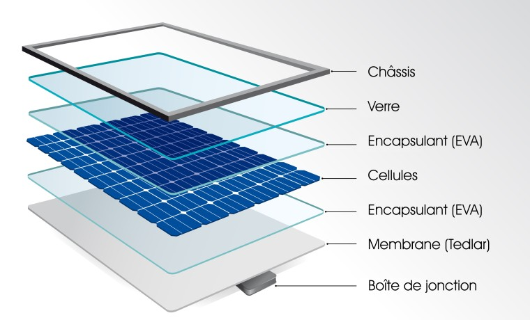
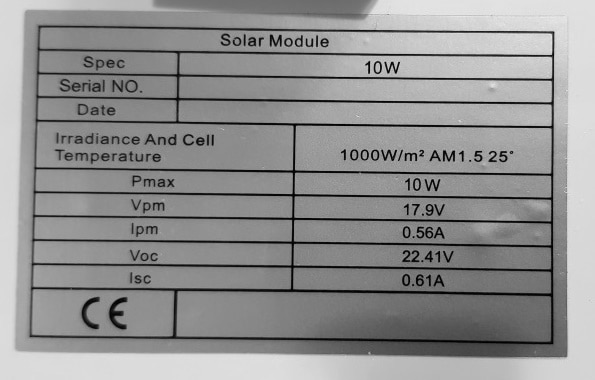

Les panneaux solaires
Il existe deux types de panneaux solaires, les panneaux solaires polycristallins et les panneaux solaires monocrystallin qui ont un meilleur rendement comparement aux polycristallins. Le choix des panneaux se fait en fonction de leurs caractéristiques qui repondent aux mieux les attentes de la clientèle. Ces caractéristiques sont sont en général indiquées sur une étiquette collée à l'arrière du panneau.
 
Tous les panneaux utilisés sur une même installation doivent avoir les mêmes caractéristiques (tension et ampérage).Le regulateur
Le régulateur est un ensemble électronique dont le rôle est de gérer les flux de courant : courant venant des panneaux en vue de charger la batterie et courant venant de la batterie vers les consommateurs. Il gère la charge et la décharge de la batterie en déconnectant le panneau quand les batteries sont chargées ou en coupant l’alimentation aux consommateurs quand la batterie est trop déchargée. Le régulateur est donc a l’intersection de l’ensemble. Il comporte une diode anti retour pour éviter à la batterie de se décharger dans le panneau pendant la nuit. On ne peut donc pas faire l’économie d’un régulateur !
L'onduleur ou inverter
L’onduleur est un ensemble électronique qui permet de produire du courant alternatif (220V) à partir d’un courant continu (12V). Celui-ci est directement connecté sur les batteries (12 volts), puis relié aux consommateurs (220 volts) .Il n’y a pas d’entretien spécifique à faire pour ce type de matériel. Il faut juste veiller à ce qu’il soit installé dans un lieu sec, ventilé et protégé au maximum de l’humidité. Il convient aussi de dépoussiérer régulièrement l’onduleur.
Les batteries
Les batteries solaires sont adaptées au cyclage quotidien et à la charge lente par panneaux solaires. Leur durée de vie est considérablement augmentée si la profondeur de décharge quotidienne est inférieure à 30% de la capacité totale pour les batteries plomb et jusqu'à 70% pour les batteries lithium. Pour faire un choix de batterie cliquez moi
ENTRETIEN DES BATTERIES SOLAIRES AU PLOMB OUVERT
Nous vous recommandons d'effectuer une vérification de vos batteries solaires tous les 6 mois environ. Pour cela nous vous recommandons les opérations suivantes1) Vérifier le niveau d'électrolyte et remettre à niveau l'électrolyte (30 à 35 mm en dessous de la surface supérieure du couvercle) en rajoutant de l'eau distillée. Ne jamais rajouter d'acide ni dépasser le niveau maximum indiqué.
2) Administrer une charge d'égalisation à intensité constante 1/20ème de la capacité pendant 1 heure ou plus si nécessaire. (Tous les éléments doivent "bouillir"). Un chargeur régulé de bonne qualité serait idéal.
3) Mesurer la densité de l'électrolyte de chaque élément. Si la densité (Ramenée à 25°C) est supérieure ou égale à 1.260 pour tous les éléments, la batterie est prête à être remise en service.
CONSIGNES DE SÉCURITÉ
L'acide des batteries est un produit dangereux. Il convient, lors de toutes manipulations de prendre les précautions nécessaires (gants, lunettes, vêtements ne craignant pas des projections d'acide). Tenez à proximité un récipient rempli d'eau propre, afin de pouvoir vous lavez en cas de projection ou de contact. Ne pas hésiter à utiliser de l'eau bicarbonatée pour les rinçages corporels ou matériels. Ne pas fumer pendant les manipulations des batteries. Éviter toute flamme et étincelles dans le local. Les pièces métalliques de la batterie sont toujours sous tension et sont actives électriquement. Évitez donc les court circuits. Utilisez des outils dont le manche est isolé et ne porter pas d'objets métalliques lors des interventions (bracelets métalliques, bagues,…). Les batteries contiennent de l'acide sulfurique dilué, très corrosif. Elles émettent des gaz explosifs lors de la charge. Éviter toute décharge électrostatique, en particulier provenant de l'habillement. Les mesures de protection de la norme EN 50272-2 doivent être observées. Attention aux bacs et aux couvercles cassés. Nettoyez toute projection d'acide sur la peau ou dans les yeux à l'eau claire. En cas de contact avec les yeux ou de contact prolongé, consulter un médecin rapidement. Les vêtements ou revêtements de sol ayant reçus de l’acide sont à laver avec de l'eau claire. Les éléments / monoblocs sont lourds. Assurez-vous donc de la stabilité de l'installation. N'utilisez que des équipements de transport et de levage appropriés.Le câblage d’une installation photovoltaïque
Le type de câble solaire
Il existe des câbles spécifiquement dédiés au raccordement des panneaux photovoltaïques. Ces derniers sont généralement conçus en cuivre multibrin étamé. Le cuivre est le matériau offrant le meilleur rapport qualité/prix du marché. Le multibrin garantit une qualité de connexion optimale entre les éléments. Grâce à cela, on évite au maximum les chutes de tension (qui ne doivent pas dépasser 5%) et les pertes d’énergies engrangées.
La section du câble solaire
La section des câbles est calculée en fonction de l’intensité du courant (A) et de la distance à parcourir. La section standard d’un câble solaire est généralement comprise entre 4 et 6 mm². Cela convient pour la plupart des installations. Certaines cependant peuvent nécessiter des sections plus importantes : câble solaire 10mm²... Du fait de sa composition, le câble photovoltaïque nécessite un dénude câble spécifique. En effet, l’isolation multicouche du câble solaire requiert un réglage assez fin pour le dénuder sans abîmer le cuivre
Les connecteurs
Les câbles solaires peuvent intégrer des connecteurs afin de garantir une connexion parfaite lors de leur raccordement. Si tel est le cas, il est important de s’assurer qu’ils soient d’une qualité irréprochable, toujours dans le but d’éviter les chutes de tension et autres dysfonctionnements. Les connecteurs se doivent d’être résistants aux intempéries, aux températures extrêmes et aux rayons UV. Le modèle de référence est actuellement le connecteur MC4.
Comment réaliser le câblage de l’installation ?
Un panneau à lui seul ne suffit pas pour alimenter un logement en électricité. Ainsi, une installation photovoltaïque comprend plusieurs panneaux qui doivent être reliés entre eux et branchés au reste des éléments. On distingue ainsi deux principaux types d’installation : le branchement en série et celui en parallèle.
Le branchement en série permet d’additionner les voltages de chaque panneau en conservant la même intensité (ampérage). Pour ce faire, on relie le côté positif d’un panneau au côté négatif d’un autre. Ainsi, il est nécessaire que les différents panneaux aient le même ampérage pour effectuer ce type de branchement. Si ce n’est pas le cas, l’ensemble de l’installation va tout simplement s’aligner sur l’intensité la plus faible.
Le câblage en parallèle
Le branchement en parallèle consiste à cumuler les intensités en conservant une tension identique. Contrairement au branchement en série, les bornes positives et négatives de chaque panneau sont ici reliées entre elles. Ce type de branchement influe donc sur l’ampérage et non sur le voltage. Cela permet entre autres de créer une plus forte intensité. Il sera donc possible de relier des panneaux avec différents niveaux d’ampérage, mais cette fois-ci avec le même voltage afin d’éviter le court-circuit.
Afin d’assurer la sécurité des personnes de votre foyer mais également de vos locaux, nous ne pouvons que vous recommander de faire appel à installateur électricien agréé qualiPV. Ce professionnel pourra réaliser une installation photovoltaïque conforme aux dernières exigences environnementales et surtout bien dimensionnée.